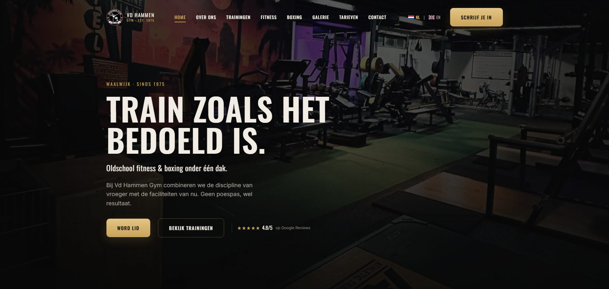
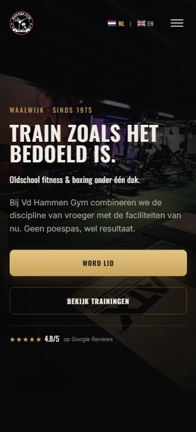
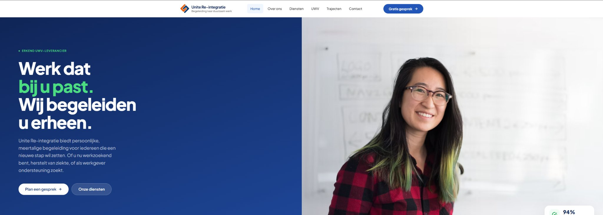
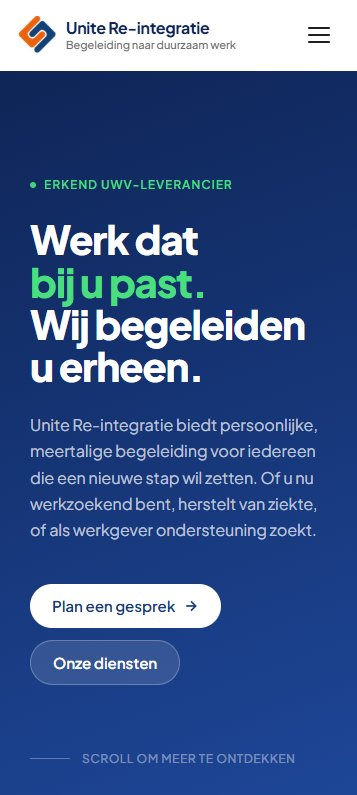
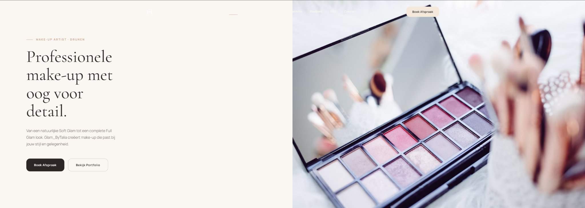
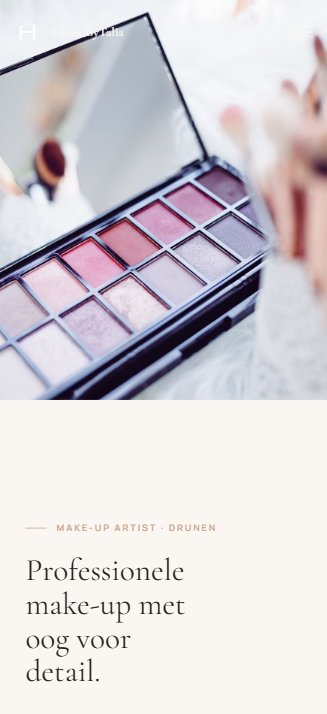

Akif Albayrak — Software Development
Software Development · IT — Nederland · 2026
Hier begon het voor mij.
Tijdens mijn eerste stages werkte ik vooral met werkplekken, hardware en IT-support. Problemen oplossen en gebruikers helpen was mijn eerste echte ervaring binnen IT.
Daarna wilde ik zelf dingen gaan bouwen.
Tijdens mijn opleiding Software Development ben ik steeds meer gaan programmeren. Vooral front-end development, het bouwen van websites, spreekt me aan.
Niet alles draait om wat je aan de voorkant ziet.
Tijdens mijn stage bij ADC werkte ik met Python en SQL om gegevens van machines te verzamelen en te verwerken.
Nu kijk ik ook naar hoe dingen beter kunnen.
Bij Baril Coatings werk ik aan automatisering met Power Automate en onderzoek ik hoe systemen via API's met elkaar kunnen samenwerken.
MBO 4
Software Development
Koning Willem I College
STILL
BUILDING.
Nog veel te leren.
WORK
Geselecteerd werk






SELECTED WORK — 01
Van der Hammen Gym
Fitness- en boksschool
Waalwijk
Voor Van der Hammen Gym heb ik een nieuwe website ontwikkeld die past bij de uitstraling van de sportschool.
De uitdaging: de sportschool heeft een duidelijke eigen identiteit, die ook online herkenbaar moest zijn. Tegelijk moest de site praktisch zijn: trainingen bekijken, informatie vinden en doorgaan naar het bestaande boekingssysteem, op elk scherm en in het Nederlands en Engels.
- Rol
- Design & Development
- Technieken
- HTML · CSS · JavaScript · Playwright
- Focus
- Responsive design · Gebruiksvriendelijkheid · Boekingsintegratie · Meertalig
- Omvang
- Negen pagina's · Nederlands & Engels
Bold on every screen
Elk apparaat.
De website is ontworpen voor desktop, tablet en mobiel.
Desktop, tablet en mobiel zijn geen kleinere versies van elkaar: navigatie, tekst, beelden en knoppen veranderen per scherm van positie en formaat.
01Mijn rol
Binnen dit project heb ik gewerkt aan zowel het ontwerp als de ontwikkeling van de website.
Ik heb de structuur van de pagina's, de visuele stijl en de navigatie bedacht en het ontwerp uitgewerkt tot een responsive website met HTML, CSS en JavaScript. Tijdens het bouwen heb ik op verschillende schermformaten getest en bijgestuurd waar de gebruikerservaring tekortschoot.
- 01StructuurOpbouw van de pagina's
- 02UitstralingVisuele stijl en navigatie
- 03DevelopmentHTML, CSS en JavaScript
- 04TestenVerschillende schermformaten
02Ontwerp
Voor het ontwerp heb ik gekozen voor een donkere en krachtige uitstraling die past bij fitness en boksen.
-
Grote foto's laten direct de sportschool zien; duidelijke typografie laat belangrijke tekst snel opvallen.
-
Goudkleurige accenten op knoppen en details geven contrast met de donkere achtergrond en houden de stijl herkenbaar.
Taalkeuze en inschrijfknop — header
- WebsiteSportschool & trainingen
- ActieBoeken of aanmelden
- ExternBestaand boekingssysteem
03Boekingsintegratie
Vanuit de website gaan bezoekers door naar het bestaande boekingssysteem. Zo richt de website zich op het presenteren van de sportschool en de trainingen, en blijft boeken of aanmelden één stap verder.
04Resultaat
- 9Pagina's
- 2Talen — NL · EN
- 3Schermformaten
Het resultaat is een website van negen pagina's waarin de identiteit van Van der Hammen Gym centraal staat. De website staat nog niet online: ik wacht op foto's om hem af te ronden.
05Wat ik heb geleerd
Dit project heeft mij vooral meer ervaring gegeven met het uitwerken van een groter websiteproject.
Ik heb geleerd om meerdere pagina's als één consistente website te ontwerpen, en om een extern boekingssysteem in een website te verwerken.
SELECTED WORK — 02
Unite Re-integratie
Re-integratiecoaching
Waalwijk e.o.
Voor Unite Re-integratie heb ik een websiteconcept ontworpen en ontwikkeld waarin duidelijkheid en toegankelijkheid centraal staan.
Unite begeleidt mensen naar duurzaam werk. De website richt zich op drie groepen tegelijk: werkzoekenden, mensen die herstellen van ziekte en werkgevers die ondersteuning zoeken.
- Rol
- Design & Front-end Development
- Technieken
- HTML · CSS · JavaScript
- Sector
- Re-integratiebegeleiding
- Focus
- Duidelijkheid · Toegankelijkheid
01De uitdaging
Over re-integratie valt veel uit te leggen: de trajecten, de rol van het UWV en wat je als werkzoekende of werkgever kunt verwachten.
De kern staat daarom direct bovenaan: wat Unite doet, voor wie, en wat de eerste stap is.
De verdere uitleg heeft een vaste plek in de navigatie: Diensten, UWV en Trajecten zijn elk een eigen onderdeel.
02Mijn rol en aanpak
Bij Unite heb ik zowel het ontwerp als de front-end gemaakt.
De nadruk lag op de indeling: welke informatie bij elkaar hoort, en wat als eerste in beeld moet staan.
- 01StructuurZes vaste onderdelen in de navigatie
- 02BoodschapEén kernzin en twee acties
- 03VormgevingDonkerblauw, wit en groen
- 04ResponsiveDesktop, tablet en mobiel
03Ontwerprichting
Voor de visuele stijl heb ik gekozen voor donkerblauw, wit en groene accenten.
Groen gebruik ik alleen voor wat het belangrijkst is. In de kop “Werk dat bij u past. Wij begeleiden u erheen.” is alleen “bij u past” groen, zodat dat deel als eerste opvalt.
De lopende tekst staat in een smalle kolom met korte regels. De website spreekt bezoekers aan met “u”, wat past bij een persoonlijke maar zakelijke dienst.
Clear on every screen
eerst.
-
01Desktop
Content links, fotografie rechts, met bovenaan de volledige navigatie en de knop “Gratis gesprek”.
-
02Tablet
Dezelfde verdeling, smaller, met de volledige navigatie; de twee knoppen komen onder elkaar.
-
03Mobiel
Een menuknop vervangt de navigatie en de foto valt weg: alleen de boodschap en de twee knoppen.
04Gebruikservaring
Bezoekers moeten snel begrijpen wat Unite aanbiedt en wat hun volgende stap kan zijn.
“Plan een gesprek” is een gevulde witte knop, “Onze diensten” een rustigere tweede keuze. In de navigatie staat daarnaast “Gratis gesprek”.
05Technische uitvoering
Ik heb de website gebouwd met HTML, CSS en JavaScript, zonder framework. Zo kon ik per schermformaat zelf bepalen wat als eerste in beeld komt.
- HTML
- De opbouw van de pagina, van navigatie tot hero.
- CSS
- Kleuren, typografie en de indeling per schermformaat.
- JavaScript
- Het interactieve gedrag van de pagina.
06Resultaat
Het resultaat is een uitgewerkt websiteconcept met een rustige, zakelijke uitstraling.
Het concept ligt nu bij Unite voor feedback.
07Wat ik heb geleerd
Dit project liet me zien dat een zakelijke website vooral duidelijk moet zijn.
Ik heb geleerd om informatie te ordenen voor verschillende soorten bezoekers tegelijk. Ook merkte ik hoeveel een rustige kleurkeuze en korte zinnen bijdragen aan een betrouwbare uitstraling.
SELECTED WORK — 03
Talia
Beauty & make-up — Drunen
Voor Glam_ByTalia, een make-up artist uit Drunen, heb ik een websiteconcept ontworpen en ontwikkeld.
De website laat haar werk zien, van Soft Glam tot Full Glam, en maakt het makkelijk om een afspraak te boeken of het portfolio te bekijken.
- Type
- Websiteconcept
- Rol
- Design & Front-end Development
- Technieken
- HTML · CSS · JavaScript
- Focus
- Fotografie · Typografie · Ruimte
01De uitdaging
Bij make-up draait veel om uitstraling. De website moest verzorgd ogen, zonder dat boeken lastiger werd.
Dat vroeg om evenwicht: ruimte voor een grote foto en een elegante kop, met de knop “Boek Afspraak” direct in beeld.
02Mijn rol en aanpak
Ook bij Talia heb ik het ontwerp en de front-end gemaakt, met veel aandacht voor de leesvolgorde.
Er staan bewust weinig elementen tegelijk in beeld, zodat de aandacht bij het werk blijft.
-
Kop
Eén zin in een elegante serif: “Professionele make-up met oog voor detail.”
-
Introductie
Twee korte zinnen over de looks, van Soft Glam tot Full Glam.
-
Acties
Een donkere knop voor “Boek Afspraak” en een lichte voor “Bekijk Portfolio”.
03Ontwerprichting
De website gebruikt een lichte, warme achtergrond met grote fotografie.
Voor de koppen koos ik een elegante serif, voor de lopende tekst en de knoppen een eenvoudige schreefloze letter. Dat contrast past bij de beautywereld.
Het palet is klein: warm wit, een bijna zwarte inkttint en een donkere knopkleur. De kop loopt over vier regels in een smalle kolom.
De rechterhelft van de hero is één grote close-up van een oogschaduwpalet met kwasten, waardoor de pagina meer als een fotopresentatie voelt.
Calm on every screen
niet verkleind.
-
Desktop
Tekst links, fotografie rechts. De navigatie ligt over de foto, met “Boek Afspraak” rechtsboven.
-
Tablet
Dezelfde verdeling met een smallere tekstkolom; de navigatie klapt hier al in tot een menuknop.
-
Mobiel
Eerst de grote foto met het logo erop, daaronder de tekst.
04Technische uitvoering
Ik heb het concept gebouwd met HTML, CSS en JavaScript, zonder framework. Zo kon ik de witruimte en de gesplitste hero per schermformaat precies afstemmen.
- HTML
- De opbouw van de pagina en de navigatie.
- CSS
- De gesplitste hero, de typografie en de indeling per schermformaat.
- JavaScript
- Het interactieve gedrag van de pagina.
05Resultaat
Het resultaat is een uitgewerkt websiteconcept waarin fotografie en typografie de stijl bepalen.
In de navigatie staan onder meer Portfolio, Reviews, FAQ en Contact. Ik wacht nu op feedback van Talia.
06Wat ik heb geleerd
Bij Talia heb ik geleerd hoe je een herkenbare visuele stijl vertaalt naar een website.
Een lichte stijl staat of valt met details: de verhouding tussen de lettertypes, genoeg witruimte en een foto die de pagina draagt, zonder dat knoppen of leesbaarheid eronder lijden.
Het was ook een oefening in weglaten.
01Wie ik ben
Ik ben AKIF.
Ik zit in het laatste jaar van mijn opleiding Software Development. Ik vind het leuk om nieuwe dingen te leren, problemen uit te zoeken en steeds meer kanten van IT te ontdekken.
- 21 jaar
- Nederland
- MBO 4 Software Development
02Meer dan alleen code
Meer dan
alleen code.
Drie woorden die goed laten zien wat voor persoon ik ben.
-
Nieuwsgierig
Als iets mijn interesse heeft, wil ik weten hoe het werkt en wat ik ermee kan doen.
-
Sociaal
Ik werk graag samen en denk mee, maar los ook prima zelfstandig iets op.
- Gedreven
Ik hoef niet alles meteen te kunnen. Zolang ik steeds een stap verder kom, ben ik tevreden.
03Mijn route
Van support
naar software.
Drie stappen: waar ik begon, waar ik nu sta en waar ik naartoe wil.
-
01
ICT Support
Mijn interesse in IT begon bij de opleiding ICT Support aan het Koning Willem I College. Daar leerde ik hoe systemen werken, hoe je problemen oplost en hoe je mensen helpt wanneer iets niet goed werkt.
-
02
Software
DevelopmentNa een tijdje wilde ik meer dan alleen problemen oplossen: ik wilde zelf dingen bouwen en begrijpen hoe software werkt.
Mijn interesse wordt steeds breder: van websites bouwen tot systemen koppelen en processen automatiseren.
Juist die afwisseling maakt IT voor mij interessant.
-
03
HBO ICT , mogelijke richting: Cybersecurity
Na mijn opleiding wil ik doorstuderen aan het HBO. Cybersecurity is een mogelijke richting, maar dat is nog een plan.
04Buiten IT
Buiten IT.
Graag actief, het liefst met een doel.
Voetbal
Fitness
Sport is voor mij een manier om mijn hoofd leeg te maken, mezelf uit te dagen en steeds beter te worden. Ik ben best competitief en vind het leuk om ergens naartoe te werken.
Verder: gamen, af en toe een boek en tijd met vrienden.
ExperienceHet archief
Ervaring. Niet alleen op papier.
Tijdens mijn stages heb ik verschillende kanten van IT leren kennen. Ik heb ervaring opgedaan met IT-support, softwareontwikkeling en het onderzoeken van automatiseringsmogelijkheden.
IndexVijf dossiers, op volgorde
Kies een dossier om het te openen
Ceva Logistics
- Periode
- —
- Functie
- IT Support Intern
- Afdeling
- ICT Service Desk
Mijn eerste stage op de ICT Service Desk. Hier leerde ik hoe IT in de praktijk werkt en hoe je gebruikers helpt.
Werkzaamheden · bij Ceva én Hydro
- Configureren van laptops.
- Plaatsen van monitoren.
- Inrichten en organiseren van nieuwe werkplekken.
- Beheren en bijhouden van het ticketingsysteem.
Vaardigheden
- IT Support
- Werkplekbeheer
- Ticketsystemen
Hydro Extrusion
- Periode
- —
- Functie
- IT Support Intern
- Afdeling
- ICT Service Desk
Bij Hydro Extrusion werkte ik opnieuw op de ICT Service Desk. Ik hielp gebruikers met IT-vragen, richtte werkplekken in en deed ervaring op binnen een andere organisatie.
Vaardigheden
- IT Support
- Werkplekbeheer
- Ticketsystemen
Infotech BV
Mijn eerste stage binnen softwareontwikkeling, bij Infotech BV, rond het softwarepakket UniWeb.
Eerst leerde ik UniWeb kennen door er een opdracht mee uit te voeren. Daarna werkte ik mee aan het omzetten van het pakket naar een webclientversie, zodat het via het bedrijfsnetwerk beschikbaar kon worden gemaakt.
- Periode
- —
- Functie
- Software Development Intern
- Richting
- Software Development
Werkzaamheden
- Een opdracht uitvoeren om UniWeb te leren kennen.
- Meewerken aan het omzetten van UniWeb naar een webclient.
- Werken in een bestaande codebase.
- Werken binnen een professionele IT-omgeving.
Vaardigheden
- Softwareontwikkeling
- Webclient-ontwikkeling
- Bestaande codebase
ADC Nederland
Bij ADC Nederland heb ik gewerkt aan een oplossing voor het verzamelen en verwerken van gegevens uit productiemachines.
Werkzaamheden
- Onderzoeken en ontwikkelen van een Python-collector.
- Werken met Microsoft SQL Server.
- Verzamelen en verwerken van machinegegevens.
- Onderzoeken van gegevens uit een extern productieplatform.
- Werken aan een oplossing voor machinemonitoring.
- Periode
- —
- Functie
- Software Development Intern
- Richting
- Development & Automation
Vaardigheden
- Python
- Microsoft SQL Server
- Dataverwerking
Baril Coatings
Bij Baril Coatings werk ik aan automatisering met Power Automate: ik zet flows op en werk ze verder uit. Daarnaast onderzoek ik hoe systemen via API's met elkaar verbonden kunnen worden.
De flows zijn nog in ontwikkeling. Naast de automatisering help ik bij IT-ondersteuning en het inrichten van apparaten en werkplekken.
- Periode
- —
- Functie
- IT & Automatisering
- Richting
- Development & Automation
Werkzaamheden
- Opzetten en uitwerken van Power Automate-flows.
- Onderzoeken van API-koppelingen en systeemintegraties.
- Onderzoeken hoe handmatige processen geautomatiseerd kunnen worden.
- IT-ondersteuning en het inrichten van apparaten en werkplekken.
Vaardigheden
- Power Automate
- Procesautomatisering
- API-koppelingen
- IT Support
- Werkplekbeheer
BijlageGereedschap
- Regelmatig gebruiktTechnieken die ik vaak gebruik in mijn opleiding en projecten.
- HTML
- CSS
- JavaScript
- PHP
- C#
- SQL
- Git
- GitHub
- Visual Studio Code
- Microsoft 365
- IT Support
- Troubleshooting
- BasiskennisHier heb ik mee gewerkt en ken ik de basis.
- Vue.js
- Python
- Power BI
- REST API's
- Stage & onderzoekAlleen tijdens een stage mee gewerkt of onderzoek naar gedaan.
- Microsoft SQL Server
- Power Automate
- Werkplekbeheer
- Ticketsystemen
Je hebt gezien waar ik ervaring heb opgedaan.
Bekijk nu wat ik heb gebouwd
ContactOpen kanaal
Nederland ·
Laat van je horen.
Kanaal openJe bericht via je eigen e-mail
Een idee, een project of gewoon kennismaken? Stuur me gerust een bericht.